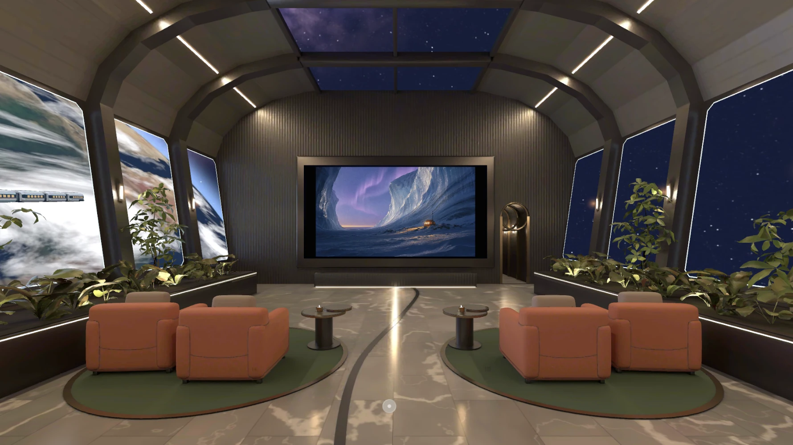

Keep your metadata
The player reads Kodi NFO files and the posters and backdrops beside your films. An existing collection can keep its artwork offline.

Turn your own films and series into a poster wall. Pick a seat and press play on PICO Space Pro.
Add the folder you already use. Reality NAS Player reads the name, year and nearby files to bring the right film or episode into view.

The player reads Kodi NFO files and the posters and backdrops beside your films. An existing collection can keep its artwork offline.
Look up films and series without a database account. The preview also checks documentary titles against broadcaster credits and anime names across languages.
Season folders and episode numbers keep box sets in order. Correct a match once and your choice survives the next scan.
Scan the wall, filter by genre or decade, then open a cover for cast, episodes and playback. Continue watching brings you back to your place.

Take the center seat for the screen or sit by the window above Earth. Switch rooms from the player, or bring the film into your own space in a floating window.
A film night can be a panorama, a stereo feature or a favorite disc backup. The player keeps your own files, subtitles and soundtracks together.

Look over your shoulder in a 360° film, face the action in VR180 or watch side-by-side and top-and-bottom stereo on the headset.

Choose a dub, switch tracks or adjust timing. Styled ASS/SSA and image-based PGS and VobSub subtitles travel with the film.
Open local files or connect over SMB, WebDAV, NFS, FTP or SFTP. Jellyfin, Emby, Plex and DLNA are supported too.
Open the main feature from an unencrypted Blu-ray or DVD backup. Support includes ISO, BDMV and VIDEO_TS.
Download for a trip. At home, an optional SMB share can carry progress, favorites and match corrections between devices.
Sideload the signed headset APK on PICO Space Pro running PICO OS 6. Start with one local file or add your NAS under Sources.